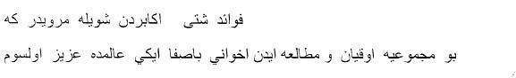
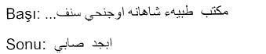
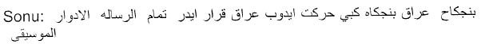

Onsekizinci yüzyılın ortalarındaki ilk kuruluşunda British Museum Library, 1990’dan bu yana da British Library adını taşıyan bu kütüphanede toplam olarak 1.200 kadar Türkçe elyazması eser bulunduğu sanılıyor. Tam bir tasnifi ve kataloğu henüz yapılmamış olan bu Türkçe yazmalar kütüphanenin Oriental and India Office Collections (OIOC) bölümünde1 bulunuyor.
Türkçe yazmaların bir bölümü kütüphaneye British Museum Library’nin ilk kuruluşuyla birlikte girmişti. Nitekim, bu kütüphanenin kurucuları ve en önemli bağışçıları arasında yer alan İngiliz koleksiyoncu Sir Hans Sloane (1660-1753), aralarında Ali Ufkî’nin Mecmua-yı Saz u Söz’ünün tek nüshasının da bulunduğu zengin bir kitap ve yazma koleksiyonunu kuruluşu sırasında British Museum’a bağışlamıştı. Bu ilk bağış –kitapların önceki sahibinin adı belirtilerek– Sloane’ın adıyla tasnif edilmişti. Nitekim, British Library’deki Türkçe yazmaların kuşkusuz en önemlisi olan Mecmua-yı Saz u Söz hâlâ [Sloane 3114] katalog numarasını taşıyor.
Ne var ki, British Library’deki Türkçe yazmaların büyük bölümü daha sonraki dönemlerde bir araya getirildi. Türkçe yazmaların ilk ve tek kataloğu ise Charles Rieu tarafından 1888 yılında yayınlandı2. Rieu kataloğunda 448 adet Türkçe elyazması eser tasnif ve tarif ediliyor. Kütüphaneye 1888 sonrasında girmiş olan Türkçe yazmalar ise henüz yayınlanmamış ve daktilo edilmiş haldeki bazı katalog taslaklarında tasnif ve kabataslak tarif edilmiş bulunuyor. Bunlardan Rieu kataloğu sonrasında 1888-1958 dönemini kapsıyan katalog 654 adet Türkçe yazmayı, 1991 sonrasını kapsayan katalog ise 65 adet Türkçe elyazmasını içeriyor3. Türk musıkisiyle ilgili birkaç elyazması eser ise henüz hiçbir tasnif ya da kataloğa dahil edilmemiş bulunuyor4.
Fransa’daki durumun aksine, İngiliz hükümetlerinin hiçbir zaman –belki sadece Hindistan’daki sömürge yönetimi hariç– Şark ülkelerinden elyazması eserler toplayıp Londra’ya getirmeyi amaçlayan devamlı ve sistematik bir politikası olmadı. Dolayısıyla British Library’ye Türkçe yazma eser girişleri, birkaç büyük bağış hariç, çoğunlukla satınalmalar yoluyla gerçekleşti. Örneğin, seyyah, tüccar ve şarkiyatçı Claudius James Rich’in (1787-1821) topladığı 802 adet Türkçe, Farsça ve Arapça elyazması eser 1825 yılında İngiliz Parlamentosu’nun çıkardığı özel bir kanunla British Museum’a verilmek üzere hükümetçe satın alınmıştı. Türkçe elyazması bağışlarının kuşkusuz en önemlisi ise Osmanlı edebiyat tarihçisi Elias John Wilkinson Gibb’in (1857-1904) 1901 tarihini taşıyan vasiyetnamesiyle özel kütüphanesinden ölümünden sonra British Museum’a intikal eden ve 1909 yılında tasnifleri yapılan 321 adet Türkçe elyazması eserdir.
British Library’de doğrudan doğruya musıkiyle ilgili 24 adet Türkçe yazma eser bulunuyor. Bunların 17 tanesi güfte mecmuası, dördü de Edvâr kitabı, yani müzik teorisi kitabıdır. Bu edvâr kitapları arasında Kantemiroğlu edvârının [Or. 12901] ve [Or. 14353] katalog numaralarını taşıyan iki nüshasını ve onbeşinci yüzyılda yazılmış Hızır bin Abdullah Edvârının dünyada bilinen altı nüshasından birini ([Or. 11091]) saymak mümkün.
British Library’deki Türkçe müzik elyazmalarının bir tanesi geleneksel Osmanlı/Türk musıkisinin tarihi açısından özellikle önemlidir. [Sloane 3114] katalog numarasını taşıyan Ali Ufkî’nin (1610?-1675) Mecmua-yı Saz u Söz başlıklı tek nüsha derlemesi Avrupa notalama sistemiyle yazılmış Türk musıkisi eserlerini içeren ilk tarihsel belgedir. Ayrıca, bu derleme onyedinci yüzyılın ortalarında Osmanlı İmparatorluğu’nun başkentinde icra edilen müzik repertuvarı hakkında önemli bilgiler içerir. Hakkında epey yorum yapılmış olmasına, araştırmacı ve müzikologlar tarafından sıkça kaynak olarak kullanılmasına ve içerdiği birçok eserin transkripsiyonunun yapılmış olmasına ve bu eserlerin bugün dahi icra edilmelerine rağmen, bu son derece önemli elyazması eserin maalesef hâlâ çağdaş ve eleştirel bir yayını yapılmış değildir. Bu eserin, Ali Ufkî’nin Fransız Millî Kütüphanesi’nde bulunan [Turc 292] katalog numaralı ve Mecmua-yı Saz u Söz ile birçok ortak yanları bulunan musıkiyle ilgili diğer bir eseriyle birlikte değerlendirilmesi gerekir.
Aşağıdaki kısa katalogda British Library’deki Türk musıkisi yazmalarını önemleri, yazım ya da istinsah tarihleri ya da kütüphaneye giriş tarihlerine göre değil, British Library’deki katalog numaralarına göre sıraladık. Yani, sırasıyla, önce Şark eserleri kataloglarında Or. [Oriental] kodlarını taşıyanları, sonra bu ilk tasnife ilâve niteliği taşıyan ve Add. [Additional] kodlarını taşıyan yazmaları, son olarak da yukarıda belirttiğimiz üzere özel bir koleksiyondan gelmiş olan Sloane kodlu yazmaları inceledik.
Ne var ki, British Library gibi çok büyük bir kütüphanede Şark yazmalarının konularına göre veya tematik bir tasnifi ve kataloğu henüz yapılmamış olduğundan, birtakım Türkçe musıkiyle ilgili kitap veya kitap bölümlerinin gözümüzden kaçmış olması da pek mümkündür. Birçok Türkçe musıki metninin Arapça veya Farsça mecmua ya da derlemelerin içinde bulunması da ihtimal dışı değildir. Burada müziğe ilişkin çok az sayıda öğe içeren veya müzikle sadece dolaylı olarak ilgili olan birkaç yazmayı da bu inceleme kapsamına almak istedik. Geleneksel Osmanlı/Türk musıkisinin tarihi hakkındaki bilgi kaynaklarımız çok değil. Bu önemsiz gibi görünen yazmalardaki bilgi kırıntılarının da zamanı gelince kayda değer olabileceğini düşündük. Tıpkıbasımı ve içerdiği birçok müzik eserinin transkripsiyonu yapılmış ve incelenmiş olan Mecmua-yı Saz u Söz [Sloane 3114] yazmasını ise kısaca tanımlamakla yetindik.
1 – [Or. 3221]
Güfte Mecmuası. 157 yaprak; 24x13.5cm (yazılı alan 19.5x10.5); sayfalar numaralanmış; 1-32 , 35-48 ve 123 sonrası sayfalar eksik; sayfada genellikle 20 satır; iki sütun üzerine düz veya mail nesih yazı; mecmuanın tümü aynı elden çıkmış; filigranlı ve âharlı Avrupa kâğıt; bütün yapraklar mail olarak mastarlanmış; yazılar zerendûd çerçeve içinde; fasıl başlıkları, eser başlıkları ve terennümler sürhle; sırtı mavi deri, mavi karton kapaklı İngiliz cilt; sırtta “Turkish Songs” ibaresi; British Museum’a Baron von Kremer tarafından 1886’da bağışlanmış.
İmza, ketebe, temellük kaydı veya istinsah tarihi yok; muhtemelen ondokuzuncu yüzyıl başlarına ait;
Her fasıl “şarkiyyat” ve “semaiyyat” bölümlerine ayrılmış; eserlerin usulleri verilmiş, besteci adlarıysa hemen hiç belirtilmemiş; 72b’de Hüseynî kâr usuleş hafif musahib Hacı Sadullah Ağa; adı geçen birkaç besteci: Nazîm, Zaharya, Hoca, Itrî, Acemler, İsak, Cerrah müezzini, Şeydâ Hâfız; Dede Efendi’nin adı geçmiyor; fasıl başlıkları: Zavil, Pesendide, Şevkitarab, Neveser, Dügâh, Sabâ, Kûçek, Hüseynî, Gerdaniye, Muhayyer Sünbüle, Bayatî, Uşşak, Acem, Nevâ, Isfahan, Isfahanek, Sultanî Irak, Arazbar, Hicaz, Şehnaz, Nişaburek, Sipihr, Tahir, Araban, Hisar, Zirgüle, Şevkâver, Bestenigâr, Rahatülervah, Eviç.
2 – [Or. 7059]
Güfte Mecmuası. 252 yaprak; 1-222 olarak numaralanmış; araya serpiştirilmiş olan boş yapraklar numara taşımıyor; 109’dan sonra bazı yapraklar ters bağlanmış; 11.5x24 cm (yazılı alan muhtelif); yapraklar sonradan tıraşlanmış ve bazı yazılı kısımlar kesilmiş; bazı sayfalar ıslanıp okunmaz hâle gelmiş, 96 ve 97. yapraklar lekeli; sayfada bazen iki bazen da üç mail sütun; üzüm filigranlı ve âharlı Avrupa kâğıt; ince talik yazı; eser başlıkları, kârlarda bend başlıkları, usul değişiklikleri ve terennümler sürhle; mecmuanın tümü, fasıl sonlarındaki eser ilâveleri dahil aynı elden çıkmış; İngiliz kraliyet armalı kırmızı bez cildin sırtında “Poetical extracts, Turkish-Persian” ibaresi var; cilt kapağının arkasında mecmuanın E.J.W. Gibb terekesinden gelen 321 adet yazmadan biri olduğunu belirten Lâtince bir ibare: “Hunc librum manu scriptum, cum CCCXX circiter aliis ad litteras orientalis spectantibus, Museo Britannico testamento legavit E.J.W. Gibb, MCMI”; Haziran 1909’da kataloglanmış.
İmza, ketebe, müstensih adı ya da istinsah tarihi yok; 202b’de bir tarih beyti: “Dedi Asım kemine...(silik)... tarihin/Boyunca câmedir Es’ad Efendi giydi fetvayı – sene 1161”; 222b’de çok silik bir mühür: Mehmed Said(?) ve bir tarih: 69; mecmua büyük bir ihtimalle 1750-60 yıllarına ait.
Geniş, mufassal ve çok önemli bir dindışı güfte mecmuası; toplam olarak 1.200’den fazla güfte içeriyor (sadece ilk 22 yaprakta 131 adet güfte); makam fihristi yok; çok sayıda Farsça güfte var; her makamın başında “Der makam...kârhâ ve nakşhâ” ibaresi, kâr ve nakışlardan sonra “murabbaât” bölümü, bazı fasıllarda da “semaiyyât” bölümü; bazı makamlarda az sayıda şarkı; her makam blokundan sonra birkaç boş sayfa bırakılmış; bazı makamlar için başlık atılmış fakat güfte verilmemiş, örnek: 166a’da ‘der makam-ı Geveşt, der makam-ı zirefkend’ başlıklarının ardında güfte yok; hemen her “kârhâ ve nakşhâ” bölümünün başında “Hoca”nın bir kârı; her eserin başında form, usul ve besteci belirtiliyor; birkaç kez de güftekârın adı veriliyor, örnek 51b’de “Çenber Beste Ahenî güfte Fuzûlî”, 207a’da “Beste Kürkçü Çenber güfte Nâfiz Efendi – Reng-i mevc-i âb-ı zümrütten boyandı câmesi”, 88b’de “Beste Çenber Itrî güfte Nazîm”, 213b’de “Muhammes beste Recep güfte Sırrî”; 213b’de “Devr-i Revân beste Na’lî güfte Kadri”; bazı sayfalarda tek güfte, bazılarında ise yedi sekiz adet;
Adı geçen bazı besteciler: Acemler, Hoca, Itrî, Gulâm, Bekir Çavuş, İsmail Çavuş, Rıf’at, Murad Ağa, Sengî Receb, Nazîm, Hasan Ağa, Küçük İmam, Na’lî, Âmâ İbrahim, Büyük Koca Osman, Seyyid Nuh, Kadıköylü Mustafa Ağa, Müezzinzade, Hâfız, Beşiktaşî şeyh Yusuf Çelebi, Tab’î Efendi, Çorbacızade, Hasan Ağa, Derviş Ali, Haham, Sütçüzade, Kadri, Tomtom İmamı, Hâfız Kumral, Nâne Ahmet, Es’ad Molla, Hâfız Post, Memiş Ağa, Andelib, Tosunzade/Tosunoğlu, Burnaz Hasan, Sarı Bâkî, Baba Nevâî, Şamlı Salih, Kemânî Mehmed Ağa, Abdullah Ağa, Küçük Müezzin; mecmuada adı geçen en “genç” besteci Abdülhalim Ağa (152a’da “Beste Çenber Halim Ağa, Hüzzam”).
3 – [Or. 7251]
Cönk (Mecmua-yı Eş’ar). 78 yaprak; 9.5x21.5 cm (yazılı alan muhtelif); genellikle âharsız, ince muhtelif renklerde (beyaz, sarı, yeşil, pembe) kâğıt; satır adedi muhtelif; düz veya mail aynı elden çıkmış harekesiz nesih yazı; başlıklar, makam adları ve terennümler sürhle; cildi 10.5x22.5 ebadında, telkârî gümüşle cildin ön ve arka kapağına çiçek ve yaprak motifleri hâkkedilmiş; sırtta “Sharkiyyat - Turkish” ibaresi; cilt içinde “A collection of love songs by celebrated poets” ibaresi; E.J.W.Gibb terekesinden gelen kitap 1909 yılında kataloglanmış.
İmza, ketebe, müstensih adı ya da istinsah tarihi yok; tahminen ondokuzuncu yüzyıl başlarına ait.
2a, 3b, 4a’da birer “türkü”; 8a ve sonrasında bir “destan”; beyitler, rubailer ve gazeller; birçoğunun başında makamları belirtilmiş; besteci adı hiç belirtilmemiş; 23a’da “beyan fi usulât; on bir usulün darpları; 24a’da bir makam fihristi, 40 adet makam 1’den 40’a kadar numaralanmış, ama sonraki yaprakların bu fihristle bir ilgisi yok; 34a, 35a, 36a, 42b, 44a, 45b, 46a’da “türkü Gevherî”; 63b, 64a, 64b’de birer “gazel-i Sultan Süleyman Han”; 72b’de “beste Muhayyer”; sık sık güfte, gazel ve beyitler sayfada bir şekil ya da bir motif meydana getirecek şekilde yazılmış; 75b’de servi, 53b’de baklava motifi, 78a-78b’de daireler var.
4 – [Or. 7252]
Güfte Mecmuası. 100 yaprak; 12x20 (yazılı alan 10x18.5) cm; birkaç sayfası boş; âharlı ince kâğıt; sayfada muhtelif satır adedi; zerendûd çerçeve içinde iki sütun üzerine mail sülüs kırması yazı; makam fihristi, usul darpları, eser başlıkları ve terennümler sürhle; aşınmış, birçok sayfası zerendûd çerçevenin bulunduğu yerden yırtılmış veya kopmuş, birçok sayfanın kenarları mürekkep lekeli; dönemin zencirekli deri cildi; sırtta “Songs-Turkish” ibaresi; cilt içleri hatip ebrûlu; E.J.W. Gibb’in terekesinden gelen kitap 1909 yılında kataloglanmış.
İmza, ketebe, müstensih adı ya da istinsah tarihi yok; tahminen onsekizinci yüzyıl sonlarına veya ondokuzuncu yüzyılın hemen başlarına ait5.
|
Başı :[278] Sonu: |
 |
Hiçbir dinî eser içermeyen, kapsamlı ve geniş bir beste ve şarkı mecmuası; 1b-2b’de “Fevaid-i şetta” başlıklı ve musıkinin ilâhî kökeninden söz eden kısa bir risale; 3b’de makam fihristi (47 makamın adı zikrediliyor); 4b-5a’da 27 adet usulün darpları; her makam blokunun başında birer beyit; 5a’da “Der fasl-ı Rast, İptida Rast ile buldu nizam/Elif-i evvel-i tertip-i makam”; 5b’de “Der fasl-ı Rehâvî, Sâniyen oldu Rehâvî Hâvî/Feyz-i te’siri bi kavl-i ravî; 14b’de “Der fasl-ı Nikrîz, Semt-i Nikrîze edip vaz’-ı kadem/Ne girîz eyledi üstâd-ı kalem”; 18b’de “Edicek ‘azm-ı rah-ı nişabur/Oldu şehrâh-ı nagam nakş-ı sütûr”; bazı fasıl başlıkları altında güfte yok; 78a’da Hüzzam faslında sadece dört eser var; 92b’de Müstear başlığı altında iki eser; birçok beste ve semainin başında “beste gurre” ya da “semai gurre” ibaresi; birçok faslın başında “kâr-ı Hoca”.
Adı en çok geçen besteciler: Musahip Bekir Ağa, Itrî, Es’ad Efendi, Zaharya (zaman zaman Zahari olarak yazılmış); adları geçen diğer besteciler: Tab’î, Dilhayat, Eyyubi Mehmet Ağa, Bohor, Rıf’at, Münir Halife-yi ağnam, Abdullah Çelebi, Küçük İmam, Hâtem Efendi, Burnaz Hasan Ağa, Corci, Kara Hâfız, Yahya Paşa merhum, Diyarbekirli Hasan, İmam-ı sultânî Arabzade Efendi, Nazîm, Hoca, Âmâ, Cerrah Müezzini, Hasan Efendizade, Tosunzade, Hâfız Post, Hakkâk, Abdi Çelebi, Tahir, Tosun, Münir halife-yi ağnam, Seyyid Nuh, Haham, Kutucu Ahmet, Kürkçü; Acemler’e, Gulam’a ait birkaç eser; 96b’de “Kâr-ı nasihatname li’l Hoca Farâbî”.
5 – [Or. 7253]
Güfte Mecmuası. 93 yaprak; 12.5x20cm (yazılı alan 8x17); çoğu yapraklar boş; âharlı ince kâğıt; iki sütun üzerine mail nesih yazı; makam ve eser başlıkları, makamları takdim eden beyitler sürhle; 3b’de tezhipli serlevhâ; zencirekli deri cilt, siyah bez kaplı karton kutu içinde; kutunun sırtında “Or. 7253- British Library - Ottoman Turkish - Şarkiyat” ibaresi; E.J.W. Gibb’in vasiyetnamesiyle 1901 yılında kütüphaneye gelen kitap 1909 yılında kataloglanmış.
İmza, ketebe, müstensih adı ya da istinsah tarihi yok; 1a’da iki temellük kaydı: “Abdürrahim”(mühür) ve “elhakîr Abdi”; 3a’da bir mühür “Esseyyid İbrahim Ethem”; tahminen onsekizinci yüzyıl sonlarına veya ondokuzuncu yüzyıl başlarına ait.
1a’da “mecmuâ-yı letâif sandûkat’ül maarif” ibaresi; 1b-2a makam fihristi (sürhle); 2b’de “der beyân-ı usulât”, sekiz usulün darpları veriliyor: Hafif, Muhammes, Çenber, Sakîl, Berefşan, Devr-i kebir, Hezec, Semaî; makam başlıkları birer beyitle belirtilmiş, birçoğu [Or.7252] yazmasındakilerin aynı; 14b’de “Isfahân olsa murabba’ beste/Çar bağ içre olur güldeste”; 26b’de “Eder oldukça dübeyt âvâze/Köhne ebyâtî beyâti tâze”; az sayıda güfte içeriyor; adları geçen besteciler: Bekir Çavuş, Tosunzade, Zaharya, Bekir Ağa, Çorbacızade; 50b’de Hüseynî beste Çorbacızade, güfte Efendimiz, “Gubârın mû değil..”; 89a-92’de tâlik yazıyla sonradan eklenmiş birkaç güfte.
6 – [Or. 7254]
Cönk. 53 yaprak; 13x7 cm; ince âharsız Avrupa kâğıt; yazılı alan muhtelif; satır adedi muhtelif; kâh düz kâh mail ince nesih yazı; 6b, 7b-12a, 13a-21a, 22a-25a, 26a-30b, 31b-36a, 37a-41a, 43b-45b, 47a-48a, 49a-53b sayfalar boş; siyah bez cildi İngiliz; sırtta “Ballads-Turkish” ibaresi; E.J.W. Gibb’in terekesinden gelen kitap 1909 yılında kataloglanmış.
İmza, ketebe, müstensih adı, istinsah tarihi ya da temellük kaydı yok; muhtemelen ondokuzuncu yüzyıl sonlarına veya yirminci yüzyıl başlarına ait; British Library geçici listesine (“Temporary handlist..”) göre ondokuzuncu yüzyıla ait.
Birçok sayfada fasıl başlıkları var, fakat sayfalar boş; toplam olarak 25 kadar güfte; 3b’de “Nakış Düyek Dede Efendi – Ey çeşm-i âhû hicr ile tenhâlara saldın beni’; 4b’de Şarkı Hicaz Hâfız Ahmet Efendi [Irsoy] –Sevdâ-yı aşkınla daim yanarım”; 41b’de” Şarkı Osman Bey– Aşkın ile ey nevcivan”; 46b şarkı Markar; 48b “Beste Remel Hâfız Efendi– Aldım hayâl-i perçemin ey mâh dideme”.
7 – [Or. 8040]
Mecmua. 109 yaprak; 14x21cm (yazılı alan 9x15); âharlı kâğıt; genellikle iki sütun üzerine mail talik yazı; ara sıra rık’a yazı ile ilâveler; sürh çerçeve; satır adedi muhtelif; siyah bez cildi İngiliz, sırtında “Songs - Turkish” ibaresi; kapağın arkasında yazmanın kaynağını ve alım tarihini belirten “Bought of Dr. K. Süssheim-June 8, 1914” ibaresi.
İmza, ketebe, müstensih adı, istinsah tarihi ya da temellük kaydı yok; muhtemelen ondokuzuncu yüzyıl sonlarına ait.
Daha çok bir halk şiirleri mecmuası niteliğinde, musıkiyle ilgili az sayıda tabir, eser ve bilgi içeriyor; 11b’de “gazel-i Hüdâî”; 17b-20a’da Eşrefoğlu Rûmî’den koşmalar; Âşık Ömer’in koşmaları, Gevherî, Nesimî ve Derviş Yunus’tan şiirler; birçok Türkçe “na’t- şerif”; 48b’de “Şarkı- Bir pür cefâ hoş dilberdir”; maniler, müfredler; 95a’da “İlâhi, Ey evliyalar serveri/ey enbiyalar rehberi”; 95b’de “Hicaz-Aşkınla ben ey nâzenin”; 108a’da iki beyit: “Hem mey içmez hem güzel sevmez demişler softalar/Eylemişler râsihâ bühtân bühtân üstüne/Dilde gam var şimdilik lutfeyle gelme ey sürûr/Olamaz bir hânede mihman mihman üstüne.”
8 – [Or. 8041]
Güfte Mecmuası. 57 yaprak; 20x12 cm; âharlı kâğıt; satır adedi ve yazılı alan muhtelif; 17a, 20a, 20b, 26a, 29a, 33b, 36a, 38a, 39b, 41a, 42a, 43a, 44a, 45b, 46a, 48a, 49a, 50b, 51a, 54a, 56a sayfalar boş; çoğunlukla iki sütun üzerine mail ve genellikle düzgün talik yazı; bazı makam ve usul adları, eser başlıkları ve terennümler sürhle; siyah bez cildi İngiliz, sırtında “Songs-Turkish” ibaresi; 57b’de soluk bir gelgit ebrûsu; kapağın arkasında yazmanın kaynağını ve alım tarihini belirten “Bought of Dr. K. Süssheim-June 8, 1914” ibaresi.
İmza, ketebe, müstensih adı, istinsah tarihi yok; 2a’da bir temellük mührü: “sahibehu Ahmed Es’ad-1229”; British Library geçici listesinde (“Temporary handlist”) onsekizinci ve ondokuzuncu yüzyıl olarak belirtilmiş; muhtemelen ondokuzuncu yüzyıl başlarına ait.
Adları geçen besteciler: Dilhayat, Tahir Efendi, Corci, Üsküdarî Rıf’at Efendi, Bekir Ağa, Halim Ağa, Musahib Sadık Ağa, Tab’î, Musahib Ahmet Ağa, Cerrah müezzini, Zaharya, Salih Ağa, Sadullah Ağa, İsak, İsmail Ağa, Portakal Ahmet Ağa, Tanburi İsak, Musahip Sadullah Ağa; birçok sayfada Ragıp Paşa’nın gazelleri; 18b-19a Der makam Sûzinâk Semaî Halim Ağa, güfte Fâzıl “Kapılır her gören ol şûh-u cihan âşûbu...”; 47a “Arazbâr beste Musahib Sadık Ağa, güfte Es’ad Bey”; 49b Şedaraban faslı (İsak ve Sadullah Ağa); 54b-55a’da “Usulât” başlığı altında 33 adet usulün darpları var.
9 – [Or. 11091]
Edvâr. Yazarı: Hızır bin Abdullah; 140 yaprak; 14x21cm (yazılı alan 9.5x13.5); âharlı kâğıt, 135-136. yapraklar pembe; ilk ve son yapraklar aşınmış, yırtılmış ve tamir görmüş; sürh çerçeve içinde sayfada 13 satır; kâh harekeli, kâh harekesiz nesih yazı; tüm cetvel ve şekiller, önemli sözcükler ve isimler, bölüm ve bazen cümle başları sürhle; cümle aralarında kırmızı nokta; bazı cümlelerin üstü sürhle çizilmiş; siyah bez cildi İngiliz; sırtta “Hıdr B. Abdullah. Kitâb ul Advâr – Turkish”; arka kapak içinde yazmanın kaynağını ve alım tarihini belirten bir ibare: “Bought of Dr. Oskar Rescher, 11 May 1929”
İmza, ketebe, müstensih adı ve istinsah tarihi yok; 2a ve 140b’de aynı temlik kaydı: “Ömer bin merhum Süleyman”; muhtemelen onaltıncı yüzyıla ait nüsha.
4a’da “böyle rivayet eyler bu edvârın müellifi Hızır bin Abdullah ki günlerde bir gün ben kemine padişâh-ı muâdeletşiâr ...sultan ibn-i sultan Murad bin Bayezid Han hallede Allah saltanatuhu ve ebede memleketuhu [4a/4b] şöyle işaret etti kim bu ilm-i musıki begayet lâtif ve şerif ilimdir ve hem senin dahi bu fende hayli sa’yın var nola bu bâbda bir kitap perdaht edesin tâ kim bu ilmin vâsılları ve tâlibleri anı teferrüc edip seni hayırla analar...”; 5b’de “...okuyanlardan ve dinleyenlerden tevki’ oldur kim hin-i kabulde tutup sehv ü hatâsı varsa lütfedip anlar kemâlleriyle sehvin ve hatâsın yerine getirip tamâm edeler...”; 6a-8a kitabın kırk yedi faslının fihristi; ilk fasıllar musıkinin ilâhî kökeni ve burçlar, gezegenler, dört unsurla ilgisi hakkında; 40b-41a’da ilm-i musıki’nin astronomi ve matematikle (“ilm-i aritmetikî”); 42a’da usullerin aruzla ilişkileri; 71a’da otuz yedinci fasıl “der beyan-ı makamat”; 72a’da “Bilgil ki ilm-i musıki ilm-i tıbbın mukaddimesidir yani ilm-i tıbbı kemâl-i vech üzerine bilmek ilm-i musıki bilmeyince bilinmez”; 74a-77a, 126a-128a’da makam, âvâze, terkib ve şu’be cetvelleri; 86b’de “...sahib-i Darbeynden Mehmed rebâbî, üstâd Kemâleddin Tebrîzî...”; 92b’de “Safiyüddin Abdülmümin ...bu fende muhtasar ve müfid kitab telif edipdür kim ana Şerefiye derler meşhur edvârdır”; 114b-115a’da birçok üstadın adı zikrediliyor: Safiyüddin Abdülmümin, Nasreddin Farabî, Kemaleddin Tûsî, Ebu Ali Sina, Celâleddin Harizmî, Şeyh Şihabeddin Sühreverdi Alaüddevle Ali Senâî, Şems-i Isfahanî, Celâleddin Şüşterî, Mehmed Lala Mısrî, Abdülkadir Meragî; 115a-115b’de “...bes her kim ki dilerse ki ol dahi bunların gibi üstâd ola, gerektir ki bu sanatın hem ilmine hem ameliyesine bile meşgul ola, dahi bu bâbda sa’y- beliğ ede, dahi bu ilmi üstadlardan işitmekte çok riyazet ede, zira bu ilim ilm-i riyâzî ve ilm-i havâîdir. Bunu tamam zabtetmek bu sanatın üstadlarına çok mülâzemet etmekle hâsıl olur”; 118a-119a’da iklimlere göre makamlar.
Hızır bin Abdullah edvârının bilinen başka nüshaları:
1- Topkapı Sarayı Kütüphanesi [Revan 1728], Hicrî 845 (1441) tarihini taşıyan bilinen en eski nüsha7.
2- Paris, Bibliothèque Nationale de France, Şark Yazmaları Bölümü [Turc 150], onyedinci yüzyıl ortasına ait nüsha8.
3- Roma, Vatikan Kütüphanesi [Turco 360], Hicrî 1033 (1623/24) tarihli nüsha9.
4- Berlin Devlet Kütüphanesi [Diez A. 8vo.72], Recep 1144 (1731/1732) tarihli nüsha10.
5- Ankara, Millî Kütüphane, [G.K. 133] , ondokuzuncu yüzyıla ait nüsha.
6- Konya, Mevlânâ Müzesi Kütüphanesi [Y. 5762], Hicrî 1177 (1762/1763) tarihli nüsha.
10 – [Or. 11224]
Edvâr. 21 yaprak; 20.5x13cm (yazılı alan 13x7); sayfada 17 satır; filigransız âharlı kâğıt; kâh harekeli, kâh harekesiz nesih yazı; başlıklar, makam adları, tüm daire, çizelge ve şekiller sürhle; siyah bez cildi İngiliz; sırtta “Work on Music-Turkish” ibaresi; arka kapak içinde yazmanın kaynağını ve alım tarihini belirten bir ibare: “Bought of Dr. Oskar Rescher, 10 May 1930”
İmza, ketebe, müstensih adı, istinsah tarihi, temellük kaydı yok; British Library kataloğuna göre11 yazma onsekizinci yüzyıl başlarına ait, ama daha önceye de ait olabilir.
Çeşitli onbeş ve onaltıncı yüzyıl edvâr kitaplarından (Seydî, Hızır bin Abdullah, Yusuf bin Nizameddin) toplanmış kısa bir derleme, bir “muhtasar der ilm-i musıki”; çeşitli ifade ve cümleler bu kitaplardan aynen aktarılmış; genel olarak Kantemiroğlu edvârı öncesine ait bir müzik anlayışını yansıtıyor; bkz. [Or. 12901]; 21b’deki çeng ve ud figürleri Yusuf bin Nizameddin edvârından nakledilmiş.
1b’de başlık (sürhle): “Hazâ kitabü’l -Edvâr”; 1b’de “Kitab-ı ilmi’l-musıki evvel ibtida Safiyüddin Abdülmümin, andan sonra Ebu Ali Sina, andan sonra üstad Kemaleddin andan sonra Nasreddin Dabî cemi-i üstâdın ervâhı şâd olsun. Bunların edvârlarından bir nüsha bünyad eyledik şirin ola ki okuyanlar üşenmeyeler, faide-i azîm bulalar”; 1b-2a’da musıkinin ilâhî ve kozmik kökeni; 3a’da “bu ilim havaî ilimdir, amel kılmak gerek. Amel ne nesnedürür, amel şoldürür kim bir üstâda hizmet kılasın, iki dizin üstüne gelesin talim edesin, nitekim görmüştür ve sana dahi göstere”; 4a-11a yirmi sekiz adet daire, makamlar, âvâzeler, dört unsur, şu’beler, burçlar; 11a’da “terkibat cetveli – bir bab dahi terkibler adın bildirir, üstadlar bünyad etmişler”; 13b-16a darblar ve usuller, 16 adet usul dairesi; 18a’da makamların çeşitli insan tabiatlarıyla uyumuna dair cetvel; 18a-20b’de ud, cenk ve ney öğrenimiyle ilgili bilgiler; 21a’da bir ud şeması, telleri sürhle, tellerin üzerinde perde adları; 21b’de bir çeng ve bir ud resmi, telleri sürhle, tellerin üzerinde perde adları, bir de ney şeması (iki paralel sürh hat arasında sekiz adet nokta) var.
Bu “muhtasar edvâr”ın başka nüshaları ve bu türün benzerleri Oxford’da Bodleian Kütüphanesi’nde [Greaves 19], [Hyde 8], [Marsh 25] ve [Rawlinson Or. 3 7/ Bodl. Or. 193] katalog numaralarıyla mevcuttur12.
11 – [Or. 12178]
Mecmua-yı Fevâid. 94 yaprak; 20.5x12.5 (yazılı alan 16.5x8) cm.; âharlı filigransız kâğıt; sayfada 15 satır; zerendûd çerçeve; 1b’de tezhipli serlevha; çoğunlukla harekeli düzgün sülüs yazı; makam adları sürhle; mavi bez cildi İngiliz kraliyet armalı, sırtı siyah deri; sırtta “A miscellany-Turkish” ibaresi; Şubat 1958’de kütüphaneye girmiş, kökeni belirtilmemiş.
İmza, ketebe, müstensih adı ve istinsah tarihi yok; 69a’da bir tarih: 1165.
2a’da bir başlık: “Mecmua-yı ni’am”; 19a-36a’da gazel ve rubailer, Nahifî ve Şeyhî’nin kasideleri, Veysî’nin tövbenamesi, bir n’at-ı peygamberî, Hakanî’nin hilye-i şerifi; 45b-50a’da esma-yı hüsna, Ebussuûd Efendi’nin fetvâları, şiirler; 50a-69a Menarîzade’nin bir risalesi, Azizî’nin “şurût es’salât” başlıklı bir mesnevîsi; 70b’de “hazâ kitab-ı akaid” var.
Müzikle ilgili bölümü 1b-18b; Arapça manzum bir münacaat, her bölümü farklı bir makamda okunmak üzere düzenlenmiş; her 7 ya da 8 beytin başında sürhle bir makam belirtilmiş: Dügâh, Hüseynî, Nevâ, Çargâh, Sünbüle, Rast, Pençgâh, Nikriz, Acem, Bûselik, Segâh, Irak, Uzzâl, Eviç; Dügâh bölümünün başında “Dügâh-Hüseynî beste-i Yusuf Efendi”.
12 – [Or. 12901]
Edvâr. 26 yaprak; 21x11.5cm (yazılı alan 15.5x6); âharlı ince kâğıt; sayfada sürh çerçeve içinde 25 satır; bazı başlıklar sürhle; 1b’de zerendûd çerçeve ve tezhipli serlevha; 21b ve 22a sayfaları ıslanmış ve silikleşmiş; ince nesih yazı; zencirekli deri cildi tamir görmüş; sırtta “Müzekki el nüfus -Turkish” ibaresi; Oxford’lu sahhaf J.Thornton’dan Mart 1964’te satın alınmış; 3.3. 1964’te tasnif edilmiş.
Yazar, ketebe, müstensih adı veya istinsah tarihi yok; muhtemelen onsekizinci yüzyıl başı ya da ortalarına ait.
Kantemir öncesi çeşitli edvâr kitaplarından (Seydî, Hızır bin Abdullah, Yusuf bin Nizameddin) ve Kantemiroğlu edvârından toplanmış kısa bir derleme, bir “muhtasar der ilm-i musıki”; bkz. [Or. 11224]; hiçbir daire, şekil, çizelge yok.
İlk sayfalar [Or.11224] yazmasının başıyla aşağı yukarı aynı (yukarıya bakınız); 4b’de “...amma bu ilim üstâda mukarenetsiz kemaliyle bilinmek emr-i muhaldir... bu ilm-i şerifi beş fenden husûle getirdiler: ilm-i hikmet, ilm-i hey’et, ilm-i tıb, ilm-i nücum, ilm-i hendese...” 5a-18a’da “teşrih-i makamat ve hükm-ü perdehâ”, 30 kadar makam ve terkibin Kantemiroğlu edvârındaki analizi aynen aktarılmış; 18a-21a’da “hüsn-ü ünsiyet ve zıdd-ı arbede” (Kantemiroğlu edvârından); 21b-23b’de “der makam Hüseynî nağme-i külli külliyât” (Kantemiroğlu edvârından); 23b’den sonra “zikr-i edvâr-ı kadîm”.
Kantemiroğlu Edvârının benzer nüshaları: Topkapı Sarayı Kütüphanesi [Emanet Hazinesi 2069]; Ankara Millî Kütüphane [G.K. 131/2]; İstanbul Üniversitesi Kütüphanesi [Türkçe Yazmalar 804] ; [Türkçe Yazmalar 1856]; [Türkçe Yazmalar 5636]
13 – [Or. 12982]
Güfte ve Şiir Mecmuası. 94 yaprak; 21x12.5 cm.; yazılı alan muhtelif; âharlı, haç ve hilâl filigranlı kâğıt; kâh tek kâh çift sütun üzerine çoğunlukla talik yazı; 14b, 16b, 18b, 21b, 26b, 30a, 34a, 37a, 40a, 42a, 47a, 48b, 51b, 63b, 66b, 69b, 71b, 76b, 79b’de 10.5x19 cm boyutlarında sürh çerçeve içinde çiçek resimleri; 70b’de bir gemi (kalyon) resmi13; resimler metin veya şiirlerle ilgili değil; birçok sayfası boş; şemseli cildi tamir görmüş, sırtta “Mecmua-yı Musıki-Turkish” ibaresi; Oxford’lu sahhaf J. Thornton’dan Aralık 1965’te satın alınmış.
İmza, ketebe, müstensih adı ve istinsah tarihi yok; 36b ve 76a’da bir temellük mührü ve bir tarih: Abdürrezzak-1241; 61a’da bir tarih: 1176; British Library kataloğuna göre onsekizinci yüzyıla ait.14
1218
1a’da bir başlık: “mecmua-yı musıki”; 1b’de “der beyân-ı usûlat” başlığı ve 18 usulün darpları; 2b-7b muhtelif şiirler; 10a-13b “mükeyyifatnâme”; Beliğ, Sâkıb, Nabî, Sümbülzade Vehbî, Neşatî, Tab’î’nin gazel, müstezad ve beyitleri; zaman zaman bu güfteler için makam ve form (beste, şarkı) belirtiliyor; 18b’de “der fasl-ı Rehâvî- beste Remel Hâfız”; 37b’de “der fasl-ı Bayatî” (iki güfte); 55b-61a’da Kuşadası Kadısı Yusufcuk Efendi’nin letâifi (bir mahkeme hükmü şeklinde kaleme alınmış); 61a’da bir tarih: 1176 (1762/63); mecmuada adı geçen besteci adları Hâfız, Tab’i.
14 – [Or. 13065]
Güfte (şarkı) Mecmuası. 151 yaprak; 24x15.5cm (yazılı alan 19x10); 107a-107b, 113b-114a, 119a, 126a, 127b, 128b, 131b, 140a, 142a sayfalar boş; zerendûd çerçeve içinde iki sütun üzerine güzel kâtip rık’ası yazı; şarkı başlıkları, makam adları, nakaratlar, yaprak numaraları sürhle; satır adedi muhtelif; lacivert bez cildi deri köşebentli ve İngiliz kraliyet armalı; sırtta “Şarkılar Mecmuası-Turkish” ibaresi; Ağustos 1967’de Oskar Rescher’den satın alınmış.
İmza, ketebe, müstensih adı ve istinsah tarihi yok; 1a’da “Mekteb-i Tıbbiye-yi Şahane üçüncü sene şakirdanından Moravî Ahmed Nafi Efendi’nin mecmuası tesmiye olunur – L’école Impériale de Médesine [aynen!] par Ahmed Nafi troisième classe” ibaresi; mühür: Ahmed Nafi; muhtemelen ondokuzuncu yüzyıl sonuna, hatta yirminci yüzyıl başlarına ait.

Esas itibarıyla bir şarkı mecmuası; şarkıların hiçbirinde besteci adı yok; birkaç makamın başında iki beste ve iki Semaîlik bir takım (sıklıkla Dede Efendi’nin); birçok makam bloku ise şarkılarla başlıyor, bunların çoğunun bestecisinin adı verilmiyor; hiçbir kâr güftesi yok; 1b-2a’da makam fihristi (93 adet makam ismi); 2b’de 19 adet usulün darbları verilmiş; 3b’de zerendûd serlevha; her makam blokunun ardında boş yapraklar ve farklı bir elden rık’a yazıyla bazı ilâveler; 144a’dan sonra çeşitli gazel ve şiirler: İzzet Molla, Haşmet, Nedim, Fuzulî, “terci’-i bend-i Nazîm Efendi”, tahmisler.
15 – [Or. 13763]
Mecmua. 175 yaprak; 18.5x12cm (yazılı alan 16x9.5); 166a-169b sayfalar boş; âharlı ve âharsız muhtelif renklerde kâğıtlar; çoğunlukla iki sütun üzerine mail harekesiz nesih yazı; sürh ve zerendûd çerçeveler; şiir başlıkları sürhle; musıkiyle ilgili 171-175. sayfalar sülüs ve talik yazılarla beyaz ve yeşil kâğıda; kahverengi cildi İngiliz; sırtta “Miscellany, Turkish – Brit. Lib. Oriental Ms. 13763” ibaresi; 23 Kasım 1976’da Sotheby’s’de bir müzayededen satın alınıp 3 Mart 1977’de tasnif edilmiş; henüz hiçbir British Library kataloğunda yer almıyor;
İmza, ketebe, müstensih adı ve istinsah tarihi yok; muhtemelen onsekizinci yüzyıla ait; 175b’de Lâtince bir ibare: “Hic Liber repertus est in Bibliotheca Raczicensi, Anno Domini 1781”
1-154a’da şiir mecmuası, gazeller, müseddesler, Bâkî’nin gazellerine tahmisler; 96b-98b’de bir miraçnâme; 159a-162a’da şerh-i esmâ-yı hüsnâ; 162b-165b’de muhtelif dualar;
Musıkiyle ilgili bölüm 171a-175a (sülüs ve tâlik yazılar, beyaz ve yeşil kâğıt); 171a’da “musıkinin mucidi Nasreddin Ahmed Farabî” ile ‘Bağdat padişahının’ macerası; 171b’de makam, âvâze ve şu’be listesi; makamatın burçlarla ve âvâzelerin tabiatla ilişkisine dair iki daire; 172a’da tâlik yazıyla: “Bilmek gerek kim bu fende durûb zabt etmekten müşkül nesne yokdürür zira tabiatı mülayim değil. Ol durûb kısmet olunur ikiye, biri Sakîl ve biri Hafif. Darbın aslı bu ikisidir kalanı bunların fer’idir”; ardından 17 adet usulün adları veriliyor; 172b-173b’de “der beyân-ı terkibat”, 32 terkibin tarifi, örnek: “Bestenigâr oldur ki Gerdaniye âgâz ede, Çargâh yüzünden Segâh karar ede”; 174a-174b’de “der beyân-ı durûb ve usul”, 18 adet usulün darbları sıralanıyor; 175a’da dört adet güfte, ikisi Semaî, “Ne hevâ-yı bağ-ı sâzed ne kenar-ı küşt-ü mârâ” (Dede Efendi’nin Acemaşiran Yürük Semaîi);
16 – [Or. 14269]
Atrabü’l- Âsâr fi Tezkireti Urefâi’l-Edvâr. Yazarı: Şeyhülislâm Es’ad Efendi; 50 yaprak; 50. yaprak boş; 23.5x14.5 (yazılı alan 16x8) cm; âharlı sarımtrak kâğıt; sayfalar mail olarak mastarlanmış fakat yazılar düz; 1b’de tezhipli serlevha; 21x12.5 ve 16x8 cm. olmak üzere çift zerendûd çerçeve; sayfada 21 satır; düzgün rık’a yazı; nazımlar, beyitler, bölüm başlıkları ve bazı tarihler sürhle; birçok yerde marj’da mail surh veya siyah yazıyla ek bazı biyografik bilgilerle şiir ve güfteler; miklebli cetvelli bordo deri cildi orijinal; 4 Temmuz 1985 tarihinde Christies’deki bir müzayededen satın alınıp aynı yılın 17 Eylülünde numaralanıp tasnife tabi tutulmuş; Şubat 1991’de cilt ve yapraklar British Library’de tamir görmüş; karton kutu içinde, kutunun sırtında “Or. Ms. 14269 - British Library-Turkish- Atrab ul Asar” ibaresi; henüz British Library kataloglarının hiçbirinde yer almıyor.
Müstensihi belli değil; 49b’de Atrabü’l-Âsâr’ın orijinal hâtimesinin metni ve bir tarih: “temmet fi 27 Rebiyülevvel 1301”
1725 - 1730 yılları arasında kaleme alınmış olan Atrabü’l-Asâr Osmanlı döneminin bilinen en önemli (belki de tek) musıkişinas tezkeresidir; “tezkire-i hanendegân” ve “tezkire-i musıkişinasan” olarak da bilinir; bu nüshada çoğu onyedinci yüzyılın ikinci yarısına ve onsekizinci yüzyıl başlarına ait 97 adet bestecinin kısa biyografisi veriliyor.
Bilinen bazı başka nüshaları15:
1- İstanbul Üniversitesi Kütüphanesi [Türkçe Yazmalar 1739], [Türkçe Yazmalar 5229], [Türkçe Yazmalar 6204], [Türkçe Yazmalar 6205]
2- Topkapı Sarayı Kütüphanesi [Hazine 1297], [Hazine 1298], [Hazine 1301]
3- Ankara Millî Kütüphane [A.3655]
4- Yazarın elyazısıyla orijinal nüshası: Kahire, Darü’l Kütüb [Mahtûtât-ı Türkiyye el Osmaniyye 138]
Atrabü’l-Âsâr’ın Veled Çelebi [İzbudak] tarafından kısaltılmış, dili nispeten sâdeleştirilmiş ve biraz değiştirilmiş bir versiyonu 1311(1893/94) yılında Mekteb mecmuasının 1-7 ve 11. sayılarında bir takdim yazısıyla birlikte basılıp yayınlanmıştır. Ayrıca Hüseyin Sadettin Arel tarafından günümüz Türkçesine çevrilmiş ve 1948-1950 arasında Musıki Mecmuası’nın 9-24 sayılarında tefrika edilmiştir.
17 – [Or. 14353]
Kantemiroğlu Edvârı. 40 yaprak; 19.5x12cm (yazılı alan 15.5x7.5); 35b’den sonrası boş; âharlı ince kâğıt; 2b’de zerendûd çerçeve, sonraki sayfalar sürh çerçeve içinde; sayfada 19 satır; 2a’da zerendûd serlevha; düzensiz ve küçük tâlik yazı; başlıklar sürhle; zencirekli orijinal cildi tamir görmüş; karton kutu içinde, kutunun sırtında “Risalet ül Edvâr-Turkish” ibaresi; Leiden’da Brill’den 1986’da satın alınmış, aynı yılın 22 Aralığında tasnif edilmiş.
40a’da ketebe kaydı: “nemekahu el fakir hâkipâyı cenâb-ı Hazret-i Mevlânâ (kuddise Allah sırruhu el ‘âli) esseyyid elhâc Mehmed Nuri el Mevlevî elHüseynî eşşehir beyne akrânehu Buhârizade li’ssene 1233”; 2a’da bir temellük mührü (Mevlevî sikkesi şeklinde): “Bende-i Hazret-i Mevlânâ ser nâyî Ali Dede-231” 16

Kantemiroğlu Edvârının makamlar ve terkiplerle ilgili bölümlerinin bir nüshası17; kısmen [Or. 12901]’un içeriğiyle örtüşüyor; bazı ufak tefek ifade ve nüsha farklılıkları var; “teşrih-i makamât ve hükm-ü perdehâ” başlığı altında 30 makam ve terkibin analizi; hiçbir şekil, daire ya da nota yok; usullerden hiç söz edilmiyor; 32a’da “der makam Hüseynî taksim nağme-i külliyât-ı makamât”; 25a’da “teşrih-i Nühüft” ve bu makam etrafındaki tartışmalar; 35a’da “taksim nağmesi” hakkında; 35b’de:“vech-i mezkûr üzere ilm-i musıki ‘alâ vechi’l hurûf ve’r-rukûm ve edvâr-ı musıki ‘alâ vech-i kavl-i hakîr-i pür taksir tamam şüd.”
18 – [Or. 14611]
Kendi Kendine Ney Üfleme Metodu. Yazarı: Esat Bakırcıoğlu (1930-2002); Altbaşlık: “Türk Musıkisinin Teorik Esasları ve Ney Üfleme Kuralları”; standard A/4 boyutunda çoğunlukla pelür kâğıda, bazen da 1. hamur kâğıda daktilo edilmiş; yaprakların yalnız bir yüzü yazılı; satır adedi muhtelif; orijinal daktilo nüshası, (karbon kopya veya fotokopi değil); çeşitli ney ve neyzen fotoğrafları (köşelerinden sayfanın altına iliştirilmiş), şemalar, ney çizimleri, desenler, örnek notalar, usuller, karakalem ney ve neyzen figürleri; notalar ve usuller mavi ve siyah tükenmez kalemle yazılmış; kutular içine yerleştirilmiş bordo karton ve bez cildinde; birinci cilt 408, ikinci cilt 416, üçüncü cilt 412 sayfa/yaprak.
Yazma Temmuz 1991’de yazar tarafından British Library’ye bağışlanmış; birinci cildin başındaki bir ibare bunu belirtir: “23.7.1991, donation of the author”; yazar Esat Bakırcıoğlu’nun kimliği ve ikametgâh adresi Cilt I’in başında veriliyor: “Emekli sigorta başmüfettişi, Adana Büyükşehir Belediyesi Konservatuvarı eski icra kurulu üyesi, nazariyat ve ney öğretmeni (Sıvas Caddesi, Akaydın Apt. 68/11 Kayseri).
Birinci cildin başında Niyazi Sayın’ın 13.10. 1984’te Beylerbeyi’nde, Mahmut Bilki’nin 20.11.1984’te İzmir’de yazılmış imzalı önsözleri, Kayseri Halk Eğitim Merkezi Müdürü Necati Kahraman’ın önsözü, Esat Bakırcıoğlu’nun Musıki ve Nota dergisinden Eser Anıl ile aynı yıl yapılmış bir röportajı; Cilt III sayfa 92-99’da eserin fihristi; eser üç cilt içinde üç “kitap”tan oluşmuş fakat her “kitap” bir cilde tekabül etmiyor: Birinci kitap Kendi Kendine Nota Bilgisi ve Usuller(384 sayfa), İkinci kitap Kendi Kendine Ney Üfleme Kuralları ve Makamlar(708 sayfa), üçüncü kitap ise Kendi Kendine Ney Açma (Üretme) Tekniği (85 sayfa) adlarını taşıyor.
19 – [Add. 7937]
Güfte Mecmuası. 39 yaprak; 21x14 cm (yazılı alan 16x10 cm) ; âharlı ince kâğıt; mastarlanmış iki mail sütun üzerine; sayfada iki sütunda 15’er satır; düzgün harekesiz nesih yazı, bazı ilâveler talik yazıyla; ilâhi mecmuası olarak başlayıp birkaç yerde beste ve birkaç şarkı güftesi eklenmiş; sürhle makam adları; kraliyet armalı mavi bez cildi İngiliz, sırt ve köşebentleri siyah deri; sırtta “song book-Turkish” ibaresi; Claudius James Rich’in 802 kitaplık koleksiyonundan gelen yazma [Rich 642] sıra numarasıyla 1825 yılında kütüphaneye girmiş.
İmza, ketebe, müstensih adı ve istinsah tarihi yok; muhtemelen onsekizinci yüzyılın ikinci yarısına ait.
İlâhi, şarkı, beste ve şiir mecmuası; 7b, 9b, 22a, 23a, 27b, 32a, 36b, 38b’de Niyazi Mısrî’nin ilâhileri; 7a, 17a, 18a, 28b, 30b, 35a’da Eşrefoğlu’nun, 21b, 26a, 27a’da Fuzulî’nin, 17a ve 26b’de Aziz Hüdaî’nin, 6b ve 17b’de Şemsî’nin, 29b ve 33a’da Cemalî Halvetî’nin şiirleri; 11b’de “der fasl-ı Nevâ”; 17a “fasl-ı Segâh” altında Muhyî ve Eşrefoğlu’nun gazelleri; 30b’de “der fasl-ı Uşşak” altında Eşrefoğlu ve Nuri’nin gazelleri; 20a’da “der fasl-ı nişâbûr” altında Himmet’in bir gazeli; 39b’de “der fasl-ı Hüseynî- üç beste” mecmuada adları geçen bazı besteciler: Itrî, Âmâ İbrahim Çelebi, Tosunzade, Müezzin Efendi, Memiş Ağa, Recep; Buhûrî Çelebi; Müezzin Çelebi, Küçük imam;
20 – [Add. 7939]
Cönk. 173 yaprak; 14.5x7 cm; âharsız, ince, sarı, pembe, beyaz ve hâkî kâğıt; her yaprak farklı renkte (sarı, pembe, hâkî, beyaz); yazılı alan ve satır adedi muhtelif; mail ve düz muhtelif ellerden talik ve harekeli nesih yazılar; yekpare düz deri cildi İngiliz; sırtta “Exerpta Poetica-Mus.Brit. Rich-7939 Pluteus CCXXII A” ibaresi; Claudius James Rich’in koleksiyonundan gelen yazma 1825’te kütüphaneye girmiş.
İmza, ketebe, müstensih adı ve istinsah tarihi yok; muhtemelen ondokuzuncu yüzyılın başlarına ait.
Çoğunlukla Arapça, Farsça, Urduca ve birkaç da Türkçe şiir ve güfte; Türkçe şiirler arasında Ruhî, Selimî, Sabit, Fuzulî, Fennî, Ahmed Paşa, Ramiz, Ragıp Paşa, Şem’î, Neşatî, Bedrî, Şeyhülislâm Yahya, Atıf ve Kıyasî’nin gazelleri; Aşık Ömer, Köroğlu, Haşmet, Vasıf ve Vehbî’nin koşmaları; birçok dübeyt ve mâni; musıkiye atıflar (makam, usul, form, besteci) az sayıda.
13a’da “şugl Mısrî der makam Segâh”; 14a’da “şugl Mısrî der makam Hicaz”; 20b’de “koşma der makam Rast”; 46b’de “koşma der makam Acem; 24b’de “beste der makam Hüseynî der cariye-i Sultan Mustafa –Tegafül eyleme ahvâlimi bil cânım”; 37b’de Yürük Semaî der makam Bayatî; 115b-116a “Esâmi-i lâle”, isim listesi; 139b Arazbar beste.
21 – [Add. 19435]
Mecmua. 66 yaprak; 19x13cm; yazılı alan muhtelif; sayfada çoğunlukla 15 satır; âharlı filigransız kâğıt; birçok yaprak yırtılmış, dağılmış ve tamir görmüş; bazen tek bazen çift sütun üzerine mail yazı, kâh düzgün nesih kâh acil bir kırma; bazı şiir başlıkları sürhle; kırmızı deri cildi İngiliz yapısı; sırtta “Poemata Variorum Turcici” ibaresi; cilt kartonunda bir satın alma ve kütüphaneye giriş kaydı: “purchased of A.S. Davidson, 21 April 1853”.
İmza, ketebe, müstensih adı ve istinsah tarihi yok; muhtemelen onsekizinci yüzyılın sonlarına ait; 66a’da bir tarih bulunmakta: 1211.
Muhtelif şiirler ve gazeller; La’lî, Medhî, Gevherî, Şâkir, Nigâh, Tıflî, Kelim, Keşfî, Yesârî, Nâbî (“merhum Nâbî” olarak geçiyor); musıkiye atıflar (makam, usul, form, besteci) az sayıda; 2a’da “Afetin talebettiği şarkıdır”; 2b’de “Şarkı Hâfız, Şarkı dâgî Kız Mehmet”; 6a’da “Kalenderî şarkı Şâkir Ağa, ağa-yı Enderûn-u Hümâyun” (sürhle); 23a’da 12 burcun günün 12 saatine ve 12 makama tekabülünü gösterir cetvel; 37a’da “Mahur”; 38b ve 39a’da “şarkı Rast”.
22 – [Add. 26326]
Mecmua. 40 yaprak; 18x10.5 (yazılı alan 14.5x7.5) cm; âharsız kalın kâğıt; yazılar sürh çerçeve içinde; şiir başlıkları sürhle; düzensiz nesih yazı; sayfada genellikle 16 satır; şemseli ve köşebentli kırmızı deri cildi İngiliz; sırtta “Khoja Abbas Poems, Arab.” ibaresi; 1a’da yazmanın kimden satın alındığını ve kütüphaneye giriş tarihini belirten bir ibare: “Purchased of C.J. Erskine Esq. Feb. 1863”
İmza, ketebe, müstensih adı ve istinsah tarihi yok; Rieu’ye göre muhtemelen ondokuzuncu yüzyılın başlarına ve Claudius James Rich’e ait nüsha.
Esas itibarıyla Arapça bir maval ve şugl mecmuası; 28a’da bir “Türkü”; 28b-36b’de Türkçe birkaç dörtlük, mâni ve beyitler var.
23 – [Sloane 3114]
Mecmua-yı Saz u Söz. Yazarı: Ali Ufkî Bey; 184 numaralanmış yaprak; 20x13.5 cm; yazılı alan ve satır adedi muhtelif; kalın âharlı, filigranlı (bazen tek hilâl, bazen çift hilâl, bazen ise bir arma) kâğıt; nota çizgileri, fasıl başlıkları her zaman sürhle, peşrev, beste, Semaî, hâne-i evvel, hâne-i sânî, mülâzime gibi ibareler de bazen sürhle; numara taşımayan birçok boş yaprak var, çoğu fasılların sonunda olmak üzere toplam 56 boş yaprak; kalın kırmızı İngiliz deri cildin ön ve arka kapaklarında bir arma, armanın etrafındaki yazı “Bibliotheca Manuscripta Sloaniana”; sırttaki ibare: “Cantilenae Variae cum notis musicis – Turkish”; Sir Hans Sloane’ın kitap koleksiyonuyla birlikte 1753’te British Library’ye girmiş18.
Mecmua-yı Saz u Söz’ün 1888 tarihli Rieu Türkçe yazmalar kataloğundaki tanımının Türkçe çevirisi şöyledir:
“Sloane 3114- 184 yaprak; sekize 5_ inç; not defteri şeklinde, muhtemelen onyedinci yüzyılda küçük nesih yazıyla yazılmış; makamlarına göre tertip edilmiş ve Avrupa nota sistemine göre yazılmış Türkçe şarkılar mecmuası. Mecmuanın yazarı olan Ali Ufkî’nin adı 9b’deki şu başlıkta görülüyor:
Hâzâ mecmua-yı saz u söz
Cami’i Ali Ufkî cihan dide
Bu derleme bölümlere (fasıl) ayrılmış, bölüm başlıkları müzik modlarının teknik adları: 10b Hüseynî, 35b Muhayyer, 50b Nevâ, 62b Uşşak, 70b Bayatî, 75 Acem, 87 Sabâ, 96 Çargâh, 98 Segâh, 109 Rast, 123 Mahur, 129 Eviç, 134 Irak, 142 Nihavend, 145 Uzzal, 152 Nişabur, 156 Sünbüle, 159 Şehnaz, 161 Nikriz, 165 Bûselik, 168 Aşiran Bûselik, 174 Hisar.
108a’da yazarı belirsiz ve 24 Zilkâde 1079 tarihini taşıyan Arapça bir metinde Ali Ufkî büyük bir müzisyen, hekim ve dilci olarak tanımlanıyor. Yine aynı nota göre Ali Ufkî o tarihte Yenişehir’e Sultan Mehmed’in tercümanı olarak gelmiş bulunuyor. 39b’de Sultan Mehmed’e 1075 tarihli manzum bir medhiye var. Ufkî’nin bu derlemedeki bazı şiirlerin yazarı olduğu anlaşılıyor. Bkz. 119b.
Bu derleme cildi Sultan IV. Mehmed’in santurisi Ali Beg’in mülkiyetinde bulunuyordu. Cildin sahibi yaprakların dış kenarına şöyle bir ibare yazmış: “sâhibehu ve mâlikehu ‘Ali Bey es-Santuri ‘an sazendegân-ı sultan Mehmed, sene 60”.
Yaprak 1-8’e Salomon Negri’nin Lâtince bir fihristi sonradan iliştirilmiş”19.
1-8’de Salomon Negri’ni fihristinde sadece notası verilen eserler numaralanmış: toplam 389 eser.
Mecmuanın tıpkıbasımı: Prof.Dr. Şükrü Elçin (hazırlayan), Ali Ufkî – Mecmûa-i Saz ü Söz (Kültür Bakanlığı Türk Musıkisi Eserleri-1), İstanbul, Millî Eğitim Basımevi, 1976.
İçindeki bazı eserlerin bugünkü notaya transkripsiyonu şu yayınlarda görülebilir:
1– Gültekin Oransay, “Ali Ufkî ve Dinî Türk Musıkisi”, Yayınlanmamış doçentlik tezi, Ankara Üniversitesi İlâhiyat Fakültesi Kütüphanesi [Y. 16566], 98 sayfa.
2- Muammer Uludemir, Mecmua-i sâz ü söz (nota çevirileri)-Semaîler, İzmir, Ocak 1991.
3- Muammer Uludemir, Mecmua-i sâz ü söz (nota çevirileri)-Murabbalar, İzmir, Mart 1991.
4- Muammer Uludemir, Mecmua-i sâz ü söz –Türküler, İzmir, Ocak 1992.
5- Haydar Sanal, Mehter Musıkisi, İstanbul, Millî Eğitim Bakanlığı yayınları, 1964.
Mecmua-yı Saz u Söz’deki bazı musıki eserlerinin Kantemiroğlu edvârındaki versiyonları ve bu versiyonların karşılaştırılması için bkz: Owen Wright, Demetrius Cantemir: The Collection of Notations (Vol.1), School of Oriental and African Studies (SOAS Musicological series Vol. 2), London, 1992; Walter Feldman, Music of the Ottoman Court; Makam, Composition and the Early Ottoman Instrumental Repertoire, Berlin, Verlag für Wissenschaft und Bildung, 1996.
24 – [Sloane 4089]
Cönk. 30 yaprak; 19.5x6.5 cm; yazılı alan muhtelif; ince âharlı kâğıt, bir iki pembe yaprak; düz veya mail tâlik, nesih ve divanî yazılar; sarı bez cildi İngiliz, sırtı deri; İngiliz kraliyet armalı sırtta “Extracts, Turk. Arab.” ibaresi.
İmza, ketebe, müstensih adı ve istinsah tarihi yok; muhtemelen onyedinci yüzyıla ait.
Esas itibarıyla bir ilâhi mecmuası; 1-12’de Alimî, Zâkirî, Hüdâî ve Niyazî’nin ilâhileri; 5a’da der makam Nevâ ilâhi; 7a’da ilâhi der makam Bûselik “dönmez bu gönül senden gayrıya”, makam Sabâ “neyleyim dünyayı bana Allahım gerek”; Sünbüle, Segâh, Bayatî makamında ilâhiler; 12b-14b “fâl-i Kur’an”; 15a-18a Yahya’nın birkaç gazeli; Arapça çeşitli şiir ve beyitler; 24a’da Hamdî’nin manzum bir “kıyafetname”si.